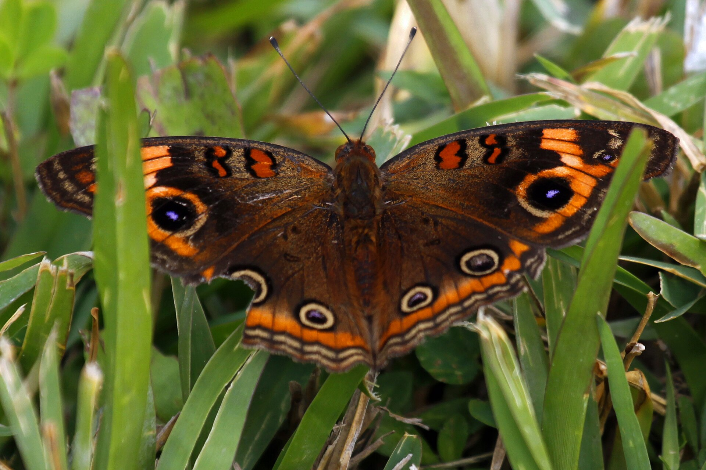
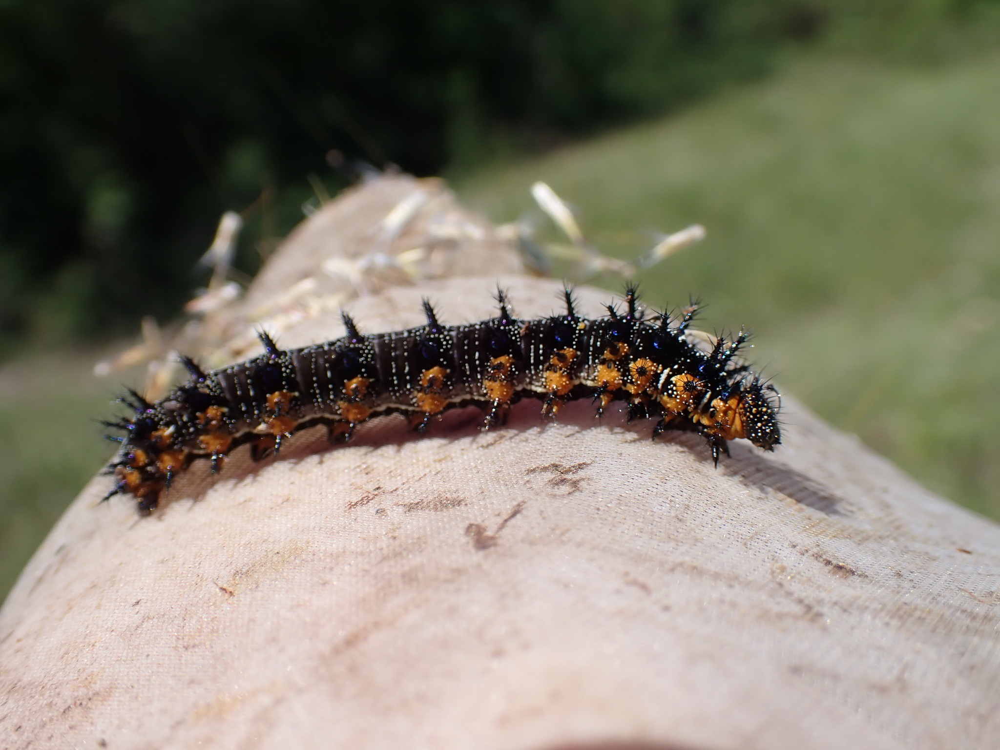

Junonia neildi
PossibleThe buckeye of black mangrove, not the weedy inland one. August history on the coast is strong even when a given week is quiet. If you are on a Cape Coral canal that still has mangrove, this is the buckeye to expect.

Mangrove, salt marsh, coastal.
Black mangrove
Avicennia germinansCommon Buckeye (Junonia coenia) is the weedy inland one. We use J. neildi for the mangrove insect. Older signs may say genoveva or evarete; do not copy those.